Simultaneously fitting PRFs in K2¶
In [1]:
%matplotlib inline
from astropy.io import fits as pyfits
import tqdm
import numpy as np
import matplotlib.pyplot as pl
from pyke import KeplerTargetPixelFile, KeplerQualityFlags
import photutils.aperture as apr
from oktopus import PoissonLikelihood
from oktopus.kepler_prf import KeplerPRF
/Users/jvmirca/anaconda3/lib/python3.6/site-packages/matplotlib/__init__.py:1405: UserWarning:
This call to matplotlib.use() has no effect because the backend has already
been chosen; matplotlib.use() must be called *before* pylab, matplotlib.pyplot,
or matplotlib.backends is imported for the first time.
warnings.warn(_use_error_msg)
In [2]:
tpf = KeplerTargetPixelFile('ktwo224364733-c91_lpd-targ.fits',
quality_bitmask=KeplerQualityFlags.QUALITY_ZERO_BITMASK)
bkg = tpf.estimate_background()
apr.CircularAperture((941.5, 878.5), r=2).plot()
apr.CircularAperture((944.5, 875.5), r=2).plot()
tpf.plot(scale='sqrt')
/Users/jvmirca/dev/astropy/astropy/visualization/stretch.py:115: RuntimeWarning: invalid value encountered in sqrt
np.sqrt(values, out=values)
/Users/jvmirca/anaconda3/lib/python3.6/site-packages/matplotlib/colors.py:496: RuntimeWarning: invalid value encountered in less
cbook._putmask(xa, xa < 0.0, -1)
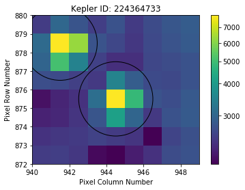
In [3]:
lc1, lc2 = np.zeros(len(tpf.time)), np.zeros(len(tpf.time))
for i in range(len(tpf.time)):
lc1[i] = apr.CircularAperture((941.5 - tpf.column, 878.5 - tpf.row), r=2).do_photometry(tpf.flux[i])[0]
lc2[i] = apr.CircularAperture((944.5 - tpf.column, 875.5 - tpf.row), r=2).do_photometry(tpf.flux[i])[0]
In [4]:
pl.figure(figsize=[10, 4])
pl.plot(tpf.time, (lc1 - np.mean(lc1)) / np.std(lc1), 'x', markersize=1)
Out[4]:
[<matplotlib.lines.Line2D at 0x11bb9ba58>]
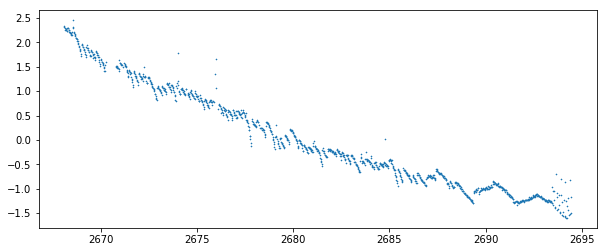
In [5]:
pl.figure(figsize=[10, 4])
pl.plot(tpf.time, (lc2 - np.mean(lc2)) / np.std(lc2), 'x', markersize=1)
Out[5]:
[<matplotlib.lines.Line2D at 0x11bd540b8>]
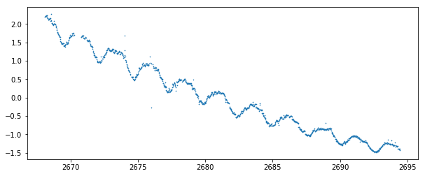
In [6]:
pl.figure(figsize=[10, 4])
pl.plot(tpf.time, (bkg - np.mean(bkg)) / np.std(bkg), 'o', markersize=1)
Out[6]:
[<matplotlib.lines.Line2D at 0x11be7ecf8>]
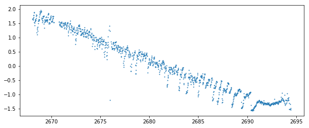
In [7]:
xc1_hat, xc2_hat = [], []
yc1_hat, yc2_hat = [], []
f1_hat, f2_hat = [], []
bkg_hat = []
residuals = []
loglike = []
prf1, prf2 = [], []
best_fit_params = []
kepprf = KeplerPRF("/Users/jvmirca/.pyke/kepler-prf-calibration-data/",
tpf.channel, (tpf.shape[1], tpf.shape[2]),
tpf.column, tpf.row)
for i in tqdm.tqdm(range(len(tpf.time))):
x0 = (lc1[i] - 12.5 * bkg[i],
lc2[i] - 12.5 * bkg[i],
941.5, 944.5,
878.5, 875.5,
bkg[i])
logL = PoissonLikelihood(tpf.flux[i], kepprf.evaluate)
result = logL.fit(x0, method='Powell', options={'xtol':1e-10, 'ftol':1e-10})
best_fit_params = np.append(best_fit_params, result.x)
loglike = np.append(loglike, logL.evaluate(result.x))
f1_hat = np.append(f1_hat, result.x[0])
f2_hat = np.append(f2_hat, result.x[1])
xc1_hat = np.append(xc1_hat, result.x[2])
xc2_hat = np.append(xc2_hat, result.x[3])
yc1_hat = np.append(yc1_hat, result.x[4])
yc2_hat = np.append(yc2_hat, result.x[5])
bkg_hat = np.append(bkg_hat, result.x[6])
prf1 = np.append(prf1, kepprf.prf_model[0])
prf2 = np.append(prf2, kepprf.prf_model[1])
residuals = np.append(residuals, kepprf.evaluate(*result.x) - tpf.flux[i])
28%|██▊ | 343/1213 [02:04<05:21, 2.71it/s]/Users/jvmirca/anaconda3/lib/python3.6/site-packages/autograd/core.py:82: RuntimeWarning: invalid value encountered in log
result_value = self.fun(*argvals, **kwargs)
100%|██████████| 1213/1213 [07:18<00:00, 2.69it/s]
In [33]:
pl.figure(figsize=[18, 4])
pl.plot(tpf.time, yc2_hat, 'x', markersize=1)
pl.ylim([875.4, 875.46])
Out[33]:
(875.4, 875.46)
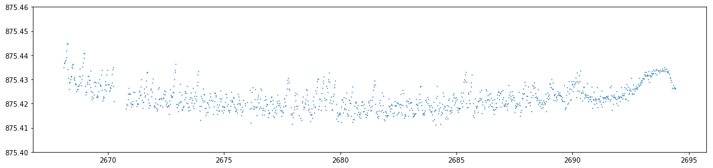
In [18]:
pl.figure(figsize=[18, 4])
pl.plot(tpf.time, yc1_hat, 'x', markersize=1)
Out[18]:
[<matplotlib.lines.Line2D at 0x11d43e6d8>]
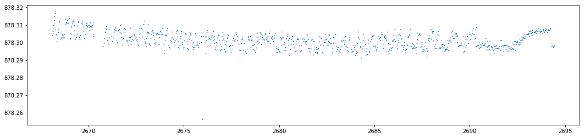
In [19]:
pl.figure(figsize=[18, 4])
pl.plot(tpf.time, xc1_hat, 'x', markersize=1)
Out[19]:
[<matplotlib.lines.Line2D at 0x11d5d5d30>]
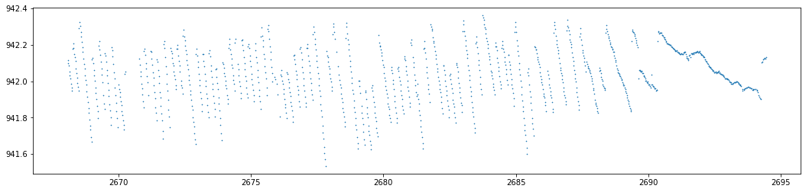
In [20]:
residuals = residuals.reshape(tpf.shape)
fitted_prf = kepprf.evaluate
In [21]:
i = 100
pl.imshow(fitted_prf(f1_hat[i], f2_hat[i], xc1_hat[i], xc2_hat[i], yc1_hat[i], yc2_hat[i], bkg_hat[i]),
origin='lower', extent=(940, 949, 872, 880))
pl.colorbar()
Out[21]:
<matplotlib.colorbar.Colorbar at 0x11cfef9e8>
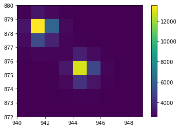
In [22]:
pl.imshow(residuals[i], origin='lower')
pl.colorbar()
Out[22]:
<matplotlib.colorbar.Colorbar at 0x11bb14128>
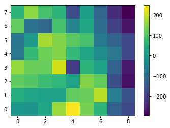
In [23]:
prf1 = np.array(prf1)
prf2 = np.array(prf2)
In [24]:
prf1 = prf1.reshape(tpf.shape)
prf2 = prf2.reshape(tpf.shape)
In [26]:
pl.imshow(prf1[i], origin='lower', extent=(940, 949, 872, 880))
apr.CircularAperture((xc1_hat[i], yc1_hat[i]), r=1.5).plot()
pl.colorbar()
Out[26]:
<matplotlib.colorbar.Colorbar at 0x11d930940>
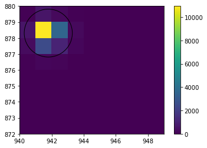
In [27]:
pl.imshow(prf2[i], origin='lower', extent=(940, 949, 872, 880))
apr.CircularAperture((xc2_hat[i], yc2_hat[i]), r=1.5).plot()
pl.colorbar()
Out[27]:
<matplotlib.colorbar.Colorbar at 0x11d993550>
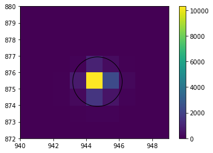
In [28]:
lc_prf1 = np.zeros(len(tpf.time))
lc_prf2 = np.zeros(len(tpf.time))
for i in range(len(tpf.time)):
lc_prf1[i] = apr.CircularAperture((941.5 - tpf.column, 878.5 - tpf.row), r=2).do_photometry(prf1[i])[0]
lc_prf2[i] = apr.CircularAperture((944.5 - tpf.column, 875.5 - tpf.row), r=1.5).do_photometry(prf2[i])[0]
In [31]:
pl.figure(figsize=[10, 4])
pl.plot(tpf.time, (lc_prf1 - np.mean(lc_prf1)) / np.std(lc_prf1), 'o', markersize=1)
pl.plot(tpf.time, (lc1 - np.mean(lc1)) / np.std(lc1), 'o', markersize=1)
pl.ylim([-2, 3])
Out[31]:
(-2, 3)
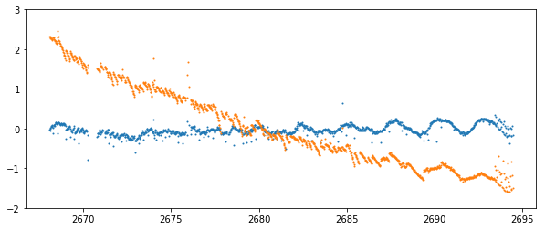
In [32]:
pl.figure(figsize=[10, 4])
pl.plot(tpf.time, (lc_prf2 - np.mean(lc_prf2)) / np.std(lc_prf2), 'o', markersize=1)
pl.plot(tpf.time, (lc2 - np.mean(lc2)) / np.std(lc2), 'o', markersize=1)
pl.ylim([-2, 3])
Out[32]:
(-2, 3)
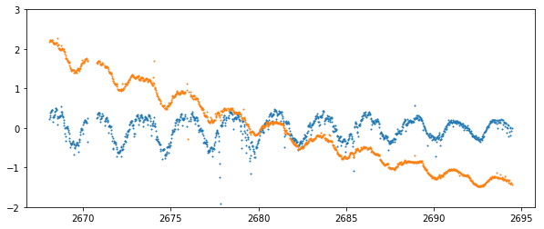